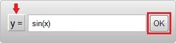
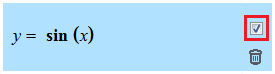
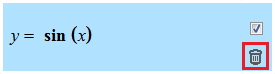
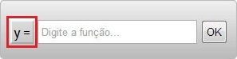
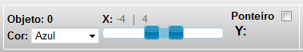
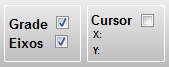

Grupo de Pesquisa em Computação Gráfica, Processamento de Imagens e Entretenimento DigitalVisualizador de Material Educacional: Módulo de Matemática `y = f(x)` |
|||||||||||
|
Grade Eixos Objeto ID:
Cor: |
|||||||||||
|
Visualizador Gráfico
VisEdu-MATEsta aplicação faz parte do Trabalho de Conclusão de Curso submetido a Universidade Regional de Blumenau (FURB) para obtenção dos créditos na disciplina de Conlusão de Curso II de Ciência da Computação - Bacharelado Acadêmico: José Ricardo Krauss Orientador: Dalton Solano dos Reis O VisEdu-MAT é um aplicativo que visa auxiliar o ensino de funções matemáticas para os alunos do curso de Bacharelado em Ciência da Computação. 1 - Padrão de notação do VisEdu-MATO VisEdu-Mat usa o padrão de notação do ASCIIMathML para exibir uma função. Portanto deve-se seguir algumas convençõesimpostas pela biblioteca, que são:
Para operadores aritméticos:
2 - Criando uma nova FunçãoAo iniciar o VisEdu-MAT 2D, percebe-se que o contradomínio definido é 'y'. Então, para gerar uma nova funçãobasta digitá-la na campo de texto e pressionar o botão 'OK', conforme a imagem abaixo: 
2.1 - Exibindo/ocultando objeto gráfico da FunçãoApós criar a nova função, a mesma será inserida na lista de funções. Por padrão, o objeto gráfico da funçãoé exibindo no Visualizador Gráfico. Para ocultar o objeto gráfico de função, basta clicar no seu checkbox, conforme a imagem abaixo: 
2.2 - Removendo uma FunçãoPara remover uma função da lista basta clicar no seu icone da lixeira, conforme a imagem abaixo:
3 - Alterando o contradomínio de uma FunçãoUma função liga um domínio (conjunto de valores de entrada) com um contradomínio (conjunto de valores de saída)de tal forma, que cada elemento do domínio está associado exatamente a um elemento do contradomínio. Isso quer dizer que:
- Quando o contradomínio for 'y', a função digitada poderá ser somente sobre o domínio de 'x' (Ex: cos(x)). Portanto, para alterar o contradomínio da função, basta clicar no botão conforme a imagem abaixo: 
4 - Selecionando uma FunçãoO VisEdu-MAT 2D possui apenas uma maneira de fazer a seleção de uma função, conforme a imagem abaixo:
4.1 - Interagindo com uma FunçãoApós selecionar a função desejada, o painel de opções da mesma é habilitado, possibilitando alterar a core os valores do seu domínio. A imagem abaixo mostra o painel que é habilitado. 
Obs: O Ponteiro é um recurso que mostra o resultado da função gerada conforme a variação dos valores do seu domínio 4.2 - Interagindo com uma Função no Visualizador GráficoPara interagir com a função no Visualizador Gráfico, é preciso usar os controles do mouse conforme a tabela abaixo:
5 - Exibindo/ocultando Grade, Eixos e CursorO VisEdu-MAT 2D permite alterar algumas configurações para o Visualizador Gráfico, como ocultar/exibir a grade auxiliar,os eixos deorientação e também o cursor. Para fazer isso, basta desmarcar os checkbox mostrados na imagem abaixo: 
O cursor é um recurso que mostra a posição X e Y do mouse no plano cartesiano do Visualizador Gráfico. Ao habilitá-lo A tabela abaixo possui alguns exemplos didáticos que mostram na prática, como o VisEdu-MAT 3D exibe uma função. Para visualizá-lo, basta clicar na imagem ao lado da função desejada. ATENÇÃO! O contradomínio da função precisa estar em 'Y'
|
|||||||||||